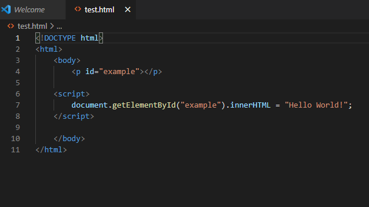
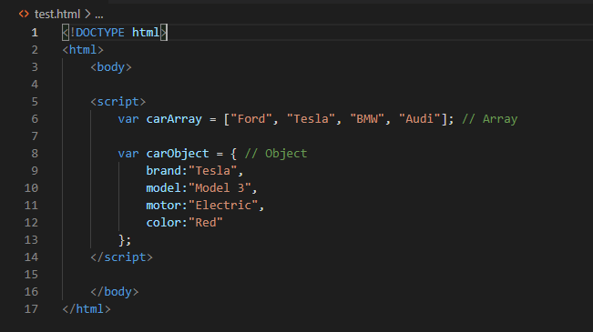
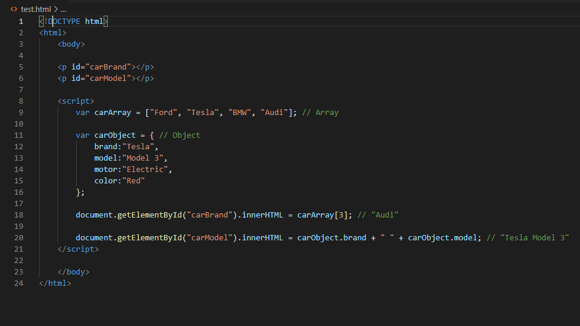
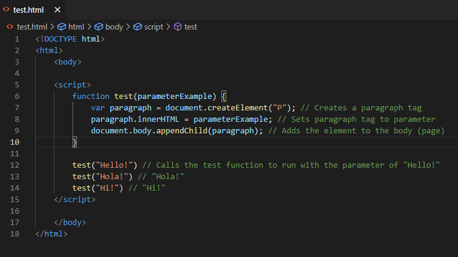

An analogy to describe them together would be a person wearing clothes. HTML by itself is like a person with no clothes,
most people have a head, body and feet etc. Similarly most webpages have a header, body and a footer. Both of them are very bare by themselves.
Now CSS are like clothes someone would wear, they add style and make things look a lot nicer. For example you could wear a green shirt or a
nice accessory like a watch. In CSS, this would be similar to having a green background or a pretty font.
The control flow is the order the computer executes statements in a script. A real life example of control flow would be a bit like following a recipe. Say you’re making tacos for dinner, first you must cut the meat and then you’ll put it on a pan to cook. Then while it’s cooking you’ll add the spices and tomatoes etc. A loop would be like while the meat is still raw keep cooking it as well done as you like it. Once that is done you’d take it off the stove and then put the meat in the taco shells and put all the toppings on you like!
There are a few different types of Document Object Model (DOM), but, we will just focus on the HTML DOM. The HTML DOM is the standard for all HTML documents on how to get, change, add, or delete HTML elements (parts). Whenever a web page is loaded, the browser creates a DOMl of the page. It is constructed as a tree of Objects, which represents everything on a web page from elements to attributes to text etc.
One way to interact with the HTML DOM is with Javascript. JavaScript is able to do many things to create a dynamic webpage (rather than a static - HTML&CSS only- webpage).
The example above shows the script interacting with the HTML document to get an element with the id of “example”. The .inner.html sets the HTML content of an element. In this case it is set so the paragraph (<p>) will say “Hello World!”
An array and an object are both ways of storing data. In an array, you are able to store many different values in the one variable. Like in the example below the carArray variable stores various values of car brands. An object is a bit similar to an array but a bit more complex as it is able to store many different properties with various names and values. In the example below, the carObject variable stores a model of car and the information about it.
To access data from an array you must use the variable and index number. The format for this is variableName[x]. Like in the example below uses carArray[3], it finds the value with the 3rd index number (aka 4th because arrays start with 0!) of the carArray variable, which is “Audi”.
To access data from an object you must use the variable as well plus the property name. The format for this is variableName.propertyName. Like in the example below uses carObject.model, it finds the value withe the property name of model of the carObject variable, which is “Model 3”.
A function is a block of code that will run a set task. But they won’t run by themselves, they need to be called. They are useful because they can be reused numerous times without having to copy & paste all the whole block of code every time. Also if you need to make a minor adjustment to the block of code you only need to make it once with the function rather than every block. The example below shows a function that creates a paragraph tag with a different greeting each time it is run.
